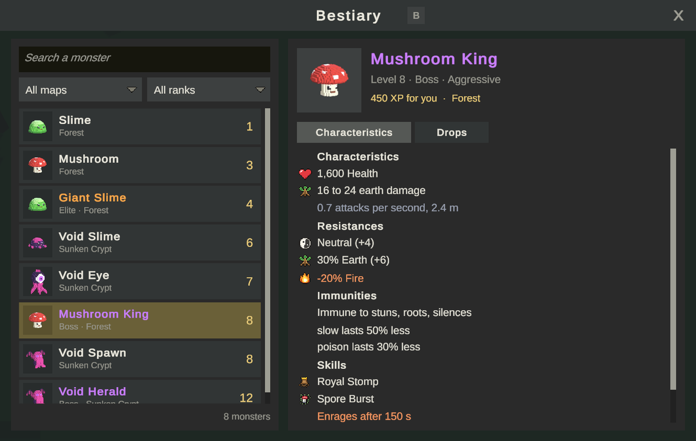

怪物图鉴
怪物图鉴是一本游戏内的书，收录每一种怪物：它的等级、阶级和行为、属性特征、栖息地，以及它掉落的物品和玩家获得每件物品的几率。本页介绍玩家看到的内容、图鉴如何获取数据，以及如何让它保持完整。
玩家视角

按 B 或点击右上角图标栏中的图鉴按钮。
列表
左侧是游戏中的所有怪物，先按等级再按名称排序，顶部显示数量，例如 "12 monsters"。每一行显示怪物的头像、以其阶级颜色显示的名称、栖息地和等级。
列表上方有三个筛选项：
| 筛选项 | 作用 |
|---|---|
| Search | 保留名称中包含该文本的怪物 |
| Map | All maps 或某一张地图：保留栖息在那里的怪物 |
| Rank | All ranks、Normal、Elite 或 Boss |
怪物页面
点击一行，在右侧查看：
- 头像和名称。
- 一行类似
Level 12 · Elite · Aggressive的文字。行为为 Passive、Aggressive 或 Defends its pack。 - 它给 你 的经验，按你的等级以服务器相同的方式计算，以及它栖息的地图：
340 XP for you · Forest, Sunken Crypt。
两个标签页：
Characteristics：生命值、各元素的伤害、每秒攻击次数和攻击距离、其他数值、各元素的抗性（负值显示为橙色）、对状态的免疫、它的技能，以及首领的狂怒。
Drops：
- 每次击杀的金币（已计入服务器的金币倍率），以及一次击杀最多能掉落的物品数：
12 to 30 gold · up to 2 items a kill。 - 每件物品及其图标（悬停可查看物品提示框）、数量，以及 你 获得它的几率。你的几率是掉落表中的几率，加上你的 Loot Chance 数值和服务器的掉落倍率，与服务器的掷骰方式一致。当它与掉落表中的几率不同时，也会显示基础几率。
- 任务掉落会注明属于哪个任务，其几率不会提高。
- 没有掉落表的怪物显示 "Drops nothing."。
用 /rates 开启的掉落活动不计入显示的几率。客户端并不知道这些活动。参见 GM 工具。
数据来源
图鉴的所有数据都从 Game Database 读取，因此不需要服务器，在单人模式和 MMO 中显示的内容相同。
| 内容 | 来源 |
|---|---|
| 哪些怪物 | Game Database 中所有开启 In Bestiary 的怪物 |
| 头像 | 怪物的 Icon |
| 属性特征和掉落 | 怪物及其掉落表 |
| 栖息地 | 每张地图的 Monsters 列表（MapData.monsters） |
| 经验 | 游戏的战斗公式，使用玩家的等级 |
In Bestiary
| 字段 | 作用 | 默认值 |
|---|---|---|
In Bestiary（inBestiary） |
在图鉴中列出。对于收税官或召唤物这类没人会去狩猎的辅助单位，请关闭 | 开 |
每种怪物的栖息地
Game Database 中的每张地图都有一个 Monsters 列表。你不需要手动填写：
- 在 Game Database > Maps 中打开该地图的卡片。
- 按 Read from scene。它会读取该地图场景中的
MonsterSpawner，以及其中首领召唤的怪物。 - 保存。示例在构建时会自动填好这些列表。
添加或删除刷怪点后，再执行一次。
头像
KitARPG > Render Missing Monster Icons 会根据预制体为每个没有图标的怪物拍一张四分之三视角的头像，并设为它的图标。示例在构建时会自动执行。要重新生成某个头像，清空它的图标后再次运行该菜单。
分步操作：将新怪物加入图鉴
- 在 Game Database 中创建怪物，保持 In Bestiary 开启。参见怪物。
- 给它一个掉落表。
- 在某个地图场景中为它放置一个
MonsterSpawner。 - 在该地图的卡片上按 Read from scene。
- 运行 KitARPG > Render Missing Monster Icons。
- 按 Play，用
B打开图鉴。
单人模式与 MMO
图鉴在两种模式下的工作方式相同。几率使用 Game Settings > Rates 中的倍率（experienceRate、lootRate、goldRate），服务器也使用这些倍率。
在模块中关闭 Bestiary 模块即可禁用它。按钮和按键都会消失。
代码
BestiaryWindow 位于 HUD 预制体上。它的方法 Matches（筛选）、Characteristics（第一个标签页）和 ChanceFor（显示的几率）都是 virtual 的，因此子类可以添加筛选项或显示你自己的数据。按键是 Toggle Key 字段（toggleKey，B）。参见重写套件行为。
常见错误
- 怪物没有显示栖息地，或者地图筛选漏掉了它。 它所在地图的 Monsters 列表已过时。在该地图上按 Read from scene。
- 怪物没有头像。 它没有图标。运行 Render Missing Monster Icons。
- 收税官出现在图鉴中。 关闭它的 In Bestiary。
- 几率与 GM 活动不符。
/rates开启的活动不会显示。